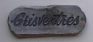

"Garde à ta gauche et sonne ta clioche", criyit Fraînque du Pré quand i' m'avisit pâsser siez li l'autre jour. "Es-tu à pratitchi pour lé Tour dé France?", i' s'fit.
"Ah danme, nânnîn", j'lî rêponnis. "J'sis à prendre dé l'exèrcice pa'ce qué ma bouonnefemme continnue à m'dithe qué j'porte trop d'paids et qué ch'n'est pas bouon pour ma santé".
Auprès aver distchuté l's affaithes du jour, lé Fraînque însistit qué j'entrîsse pour prendre eune tâssée d'thée et rencontrer sa missis (eune chose qué j'n'avais pas fait pour tchique temps).
"Mais tu n'changes pas ma Flo; tu pathais aussi janne et belle qué janmais. Tch'est qu'est tan ségret?" j'lî dis.
"Tout pliein d'travas, la satisfaction et un bouon homme", ou s'fit en vèrsant eune tâssée d'thée et m'présentant auve un gros morcé d'gâche dé chocolat. "Lé travas n'a janmais tué pèrsonne".
"Nan", j'lî rêponnis, "mais j'n'en dithais pas autant pour lé morcé d'gâche sus m'n assiette. Quand j'pense qué tout l'êffort qué j'sis à mettre à pousser ma 'bike' s'en va être pèrdu dans deux minnutes dé laîsi à mangi chutte gâche ichîn. Autant pour les calories! N'en mentionne pas rein a Mélie, j't'en prie".
Lé Fraînque avait l'air confortabl'ye dans sa tchaise et d'temps en temps i' s'endormillonné, pa'ce qu'il avait pâssé eune partie d'la niet à r'garder les rêsultats d'l'êlection Angliaîche sus la télévîsion.
"Eh bein, Charlot, tch'est qu't'en crai du rêsultat?", i' s'fit, en alleunmant eune pipée dé p'tun.
"Tout à fait satisfaîsant", j'lî rêponnis. "J'crai qué l'Sieur John Major a fait d'san pôssibl'ye duthant les seize mais qu'il a 'té en chèrge du pays et à ch't heu qu'i' continnue sa tâche après eune êlection publyique i' s'en va atchéthi la confiance dé ses minnistres, et auve lé temps L'Angliétèrre s'en va r'être èrconnue comme iun des grands pays".
"J'sis d'accord auve té", s'fit Flo. "Peux-tu fidguther la position si iun des candidats d's autres partis avait 'té chouaîsi comme Preunmié Minnistre - tout pliein dé d'vis mais pas d'action. J'les compathais à eune p'tite cauminne il' ont bein p'tit dans la mansarde".
"Tu'éthais fait un raide bouon Député", înterrompit l'Fraînque, "mais j'crai pas qué la pâraisse dé St. Ouën est acouo prête pour l'âge du cotillon!"
Il 'tait temps d'changi l'sujet, et comme j'savais qué l'Fraînque allait souvent à la pêque, j'lî d'mandis s'il avait ieu hardi d'chance dèrniéthement à bâsse-ieau, mais i' rêponnit qu'i' souffrait hardi dé rhonmatisses et qu'i' trouvait qu'les pièrres 'taient gentiment difficile à touânner. Enfîn, j'mênagis d'les înviter a v'nîn les deux auve mé et ma missis lé lundi d'Pâques et j'pouôrraimes aller à La Pulente chèrchi des baînis. J'n'ai pas fait chenna d'pis qué j'tais mousse, quand ch'tait la couôteunme lé lundi d'Pâques pour man péthe dé prendre eune vainnée d'anmîns et aller pêtchi sus l'rotchi pour des baînis et p'tites crabes. J'mé r'souveins comme tchi qu' nou r'vénait chèrgis d'baînis et nou-s-en mangeait fricachis et souos d'l'aigre jusqu'à ch'qué nou-s-en 'tait pus qu'à but.
"L'heuthe s'avanche et i' 's'en va être temps dé m'mettre en route, car Mélie s'en va être gênée où'est qué j'sis", jé m'fis, mais i' n'y'avait rein à faithe. Lé Fraînque 'tait déjà à l'armouaithe et d'vant qué j'sûsse tch'est qu'en 'tait, i' m'avait vèrsé un p'tit lèrmin d'rafraîchissements - "pour té donner couothage à monter L'Mont du Pûlé", i' s'fit.
Auprès aver d'visé pour eune autre dgiexaine dé minnutes, j'mênagis à m'êcapper en les r'mèrciant pour lus hospitalité, les ramémouaithant dé not' bordée d'pêque lé lundi d'Pâques. Comme j'faîsais man c'mîn pour la maîson jé n'pouvais sinon admither la bieauté du r'nouvé qué j'viyais dans la natuthe des bouais et fôssés, et être si èrconnaîsant d'aver passé un p'tit d'temps dans la compangnie d'anmîns d'aut'fais.
Charlot
Viyiz étout: